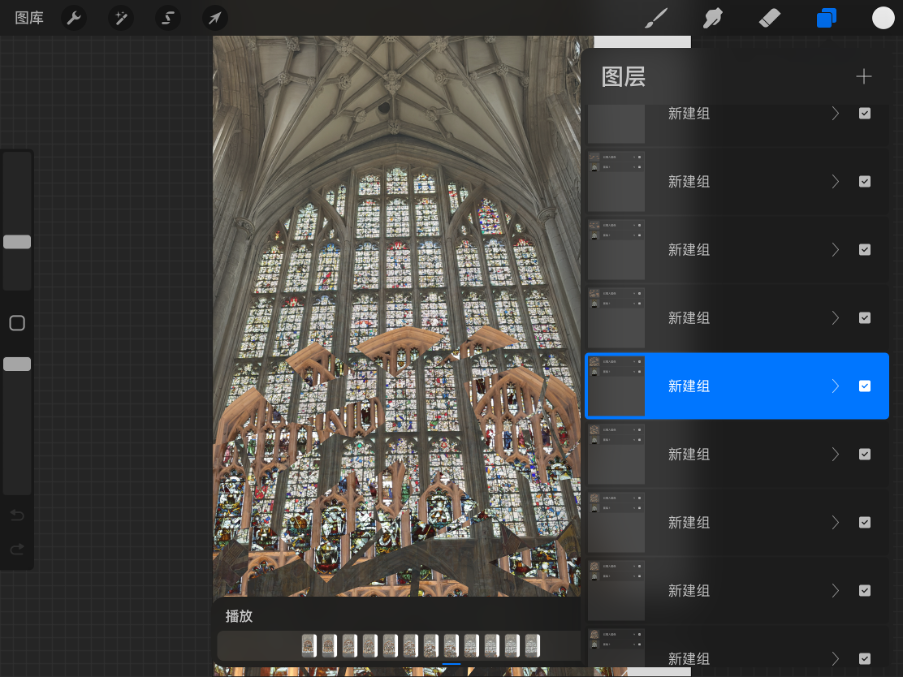

When designing the visual concept for the stained glass window breaking scene in my Winchester Cathedral AR project, I chose Procreate as the prototyping tool. Although Procreate is primarily a digital painting app, it supports simple frame-by-frame animation through its layer timeline an intuitive and rapid way for me to initially visualize the window’s breaking process.
I built the animation by duplicating layers and subtly altering the position or shape of stained glass fragments in each frame. For example, starting from a complete window layer, I gradually added cracks and scattered shards in subsequent frames, culminating in an effect of glass fragments splashing outward. This process helped me simulate the visual rhythm of the breakage through animation before translating it into real-time AR interaction.

The greatest advantage of using Procreate is that I can complete drawing, editing, and animation production in one app, which is perfect for early conceptual prototyping. Compared to Unity or 3D modeling tools, Procreate doesn’t require complicated setup, allowing me to experiment and express ideas more freely and quickly.
Reflection
- Procreate is more than just an illustration tool, its animation assist features are ideal for conceptualizing dynamic visual effects.
- Frame-by-frame prototyping is particularly suited to expressing continuous change processes, especially for symbolic or narrative-driven interactions.
- Even simple visual prototypes can convey complex ideas effectively, so long as their intent is clear.